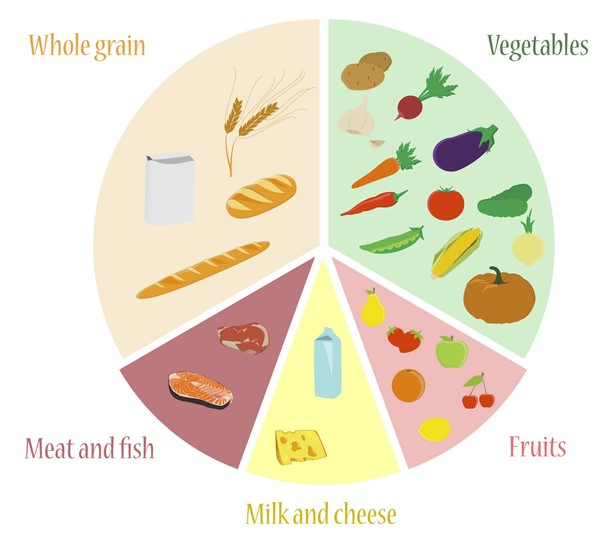
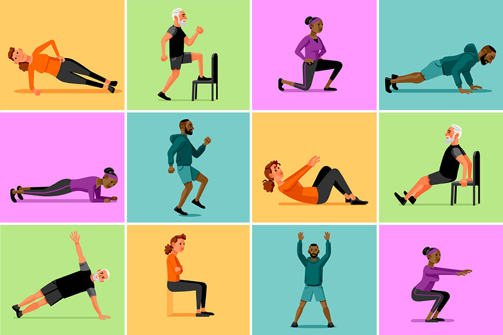
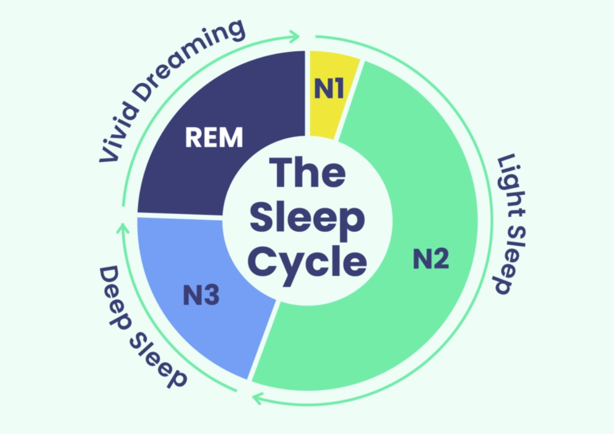

Home
Hello there ! Welcome to our FIT CLUB webpage. We are a community of health enthusiasts dedicated to promoting a healthy lifestyle. Our club is driven by a passion for well-being, and our mission is to inspire others to embark on a journey towards a healthier life. Through shared experiences, motivational stories, and practical tips, we aim to create a supportive environment where individuals can learn, grow, and adopt sustainable practices for a balanced and wholesome lifestyle. Join us on this exciting venture as we strive to encourage and empower everyone to make positive choices for their well-being.
The optimal functioning of the human body is closely intertwined with a triad of crucial factors: exercise, nutrition, and sleep. Regular physical exercise not only enhances physical fitness but also supports cardiovascular health, maintains weight, and stimulates the release of endorphins contributing to overall mental well-being. A balanced diet, rich in nutrients, vitamins, and minerals, provides the body with the fuel it needs for optimal functioning, boosts the immune system, and aids in disease prevention. It is crucial to find a balanced approach, emphasizing the overall structure of the diet rather than focusing solely on individual components. Lastly, quality sleep is indispensable. Regular physical training, proper nutrition, and adequate sleep are interconnected elements crucial for maintaining optimal physical and mental health.
Let's focus on these 3 fundamentals of a healthy lifestyle:
Food
Maintaining a balanced and nutritious diet is paramount for promoting overall health and well-being. The food we consume serves as the fuel for our bodies, influencing not only our physical health but also our mental acuity. A well-rounded diet, rich in essential nutrients, vitamins, and minerals, plays a fundamental role in preventing chronic illnesses and supporting the body's various functions.
Adequate nutrition is integral for sustaining energy levels and enhancing productivity. A diet centered around whole foods such as fruits, vegetables, lean proteins, and whole grains provides the necessary nutrients for optimal cognitive function. Furthermore, proper nutrition is instrumental in supporting a healthy metabolism, aiding in weight management, and reducing the risk of conditions like diabetes and cardiovascular diseases.
Beyond the physical aspects, the connection between diet and mental health is increasingly recognized. Certain foods can influence mood and cognitive performance, emphasizing the importance of a holistic approach to health. By adopting a mindful and balanced approach to eating, individuals can nurture their bodies, improve digestion, and cultivate a positive relationship with food. Ultimately, a well-balanced diet is not a restrictive measure but a cornerstone of a vibrant and thriving life.
Training
Regular exercise is a cornerstone of a healthy lifestyle, offering numerous physical and mental benefits. First and foremost, it is a crucial factor in maintaining a healthy weight and preventing a range of chronic diseases, including heart disease, diabetes, and obesity. Additionally, exercise is instrumental in enhancing cardiovascular health, improving circulation, and boosting overall immunity.
Beyond the physical advantages, regular physical activity plays a pivotal role in mental well-being. Engaging in exercise releases endorphins, often referred to as "feel-good" hormones, which can alleviate stress and elevate mood. Moreover, the discipline and routine established through regular workouts can positively impact one's mental resilience and ability to cope with life's challenges. In essence, exercise is not just a means to maintain physical fitness; it is a holistic approach to ensuring a healthier and more balanced life.
In the fast-paced and often sedentary nature of modern life, carving out time for regular exercise is an investment in long-term health. Whether it's a brisk walk, a challenging workout, or a calming yoga session, incorporating physical activity into one's routine is a commitment to overall well-being and vitality. Embracing an active lifestyle is not only about looking good but, more importantly, about feeling good, both physically and mentally.
Sleep
Quality sleep is a cornerstone of a healthy and fulfilling life. In a world where schedules are hectic and demands are high, the importance of prioritizing sufficient and restorative sleep cannot be overstated. Adequate sleep is essential for physical recovery, mental rejuvenation, and overall cognitive function.
During sleep, the body undergoes crucial processes, including tissue repair, immune system strengthening, and the consolidation of memories. A consistent and restful sleep routine is directly linked to improved concentration, better decision-making, and heightened creativity. Furthermore, it plays a pivotal role in regulating mood, reducing stress, and promoting emotional resilience.
In a society where digital screens and busy lifestyles often encroach upon bedtime, recognizing the significance of sleep hygiene is vital. Creating a conducive sleep environment, establishing a consistent sleep schedule, and practicing relaxation techniques contribute to a more profound and restful sleep. Prioritizing quality sleep is not just a luxury but a necessity for achieving and sustaining optimal physical and mental health.
Join us !
Create an account now and join our club to gain access to a wealth of new information and insights on your journey towards a healthier lifestyle.